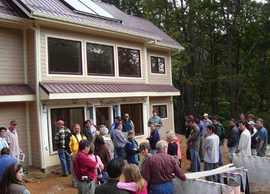

Everyone wants lower energy bills, but where do you start? TheNational Solar Tour is a great way to get inspired, get ideas andlearn about green building firsthand. This fall, American SolarEnergy Society (ASES) chapters and other organizations around thecountry will kick off the 11th annual tour, offering participantsthe chance to see nearly 4,000 buildings using green designelements, such as solar electricity and water heating, Energy Starappliances, passive solar heating and cooling, natural lighting andmore.
When ASES launched the tour in 1996, it was relatively small ? onlyabout 5,000 guests attended to view about 400 buildings nationwide.But 2006 is shaping up to be a different story: this year, tourorganizers expect more than 90,000 guests to join the tour beforeit ends in November.
Mike DiGrazia, manager of the National Solar Tour, attributes itsexplosive growth over the years to the rising public interest inalternative energy, energy conservation and green building. 'Thetide is changing,' DiGrazia says. 'People are becoming aware ofglobal warming and rising energy costs. People are becomingconcerned.' The tour, he says, 'is a tremendous vehicle foreducating the public. We want to reach people with a message ofwhat they can do right here, right now.'
The owners of the green homes and businesses on the tour are oftenaverage members of the local community, something DiGrazia saysworks to the tour's advantage. 'People go not knowing what'savailable and leave with an ?aha!' moment,' he says. When visitorssee that their neighbors are already well on the way to home energyindependence, he says, it makes the goal seem attainable. In fact,a survey during last year's tour found that 54 percent of guestshad already planned to incorporate some green building techniquesinto their own home before they attended the tour, but a whopping78 percent planned to do so after seeing examples firsthand.
To find the tour nearest you, visit theASES NationalSolar Tour Web site. The list is organized by state and updatedas more tours are scheduled. Most tours will be held October 7, butsome are as early as September and others as late asNovember.
|
 2005 National Solar Tour participants learn about green design firsthand, at this passive solar, Energy Star home in Blowing Rock, N.C. |
|
|